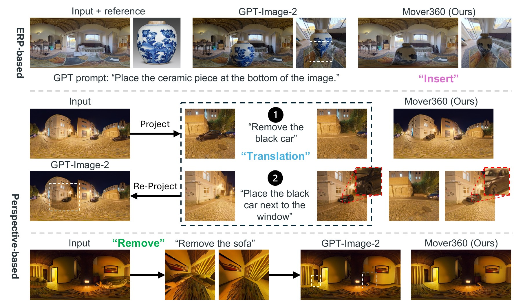
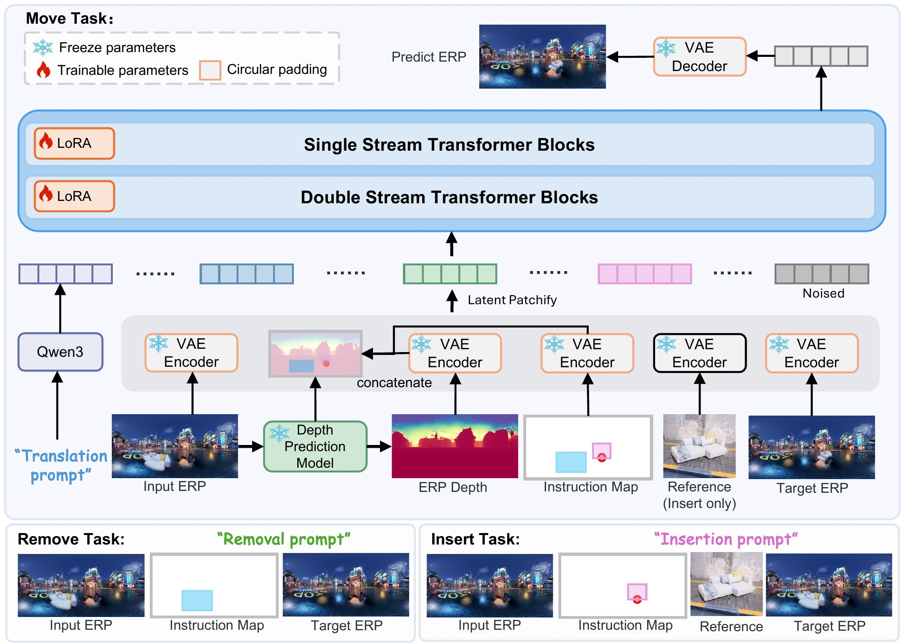
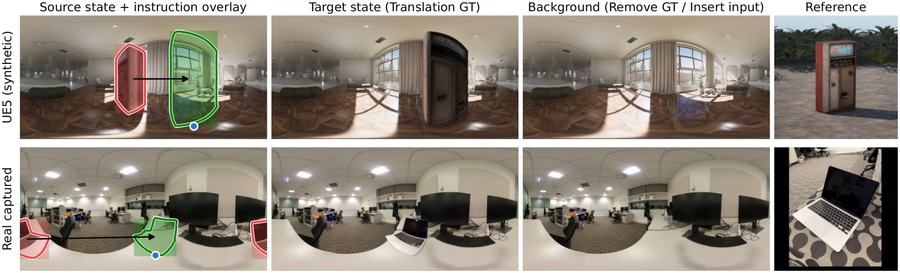
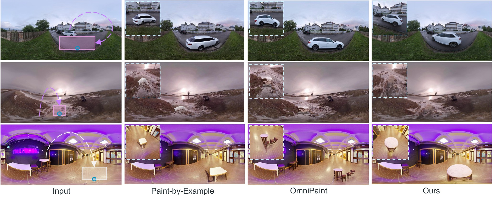
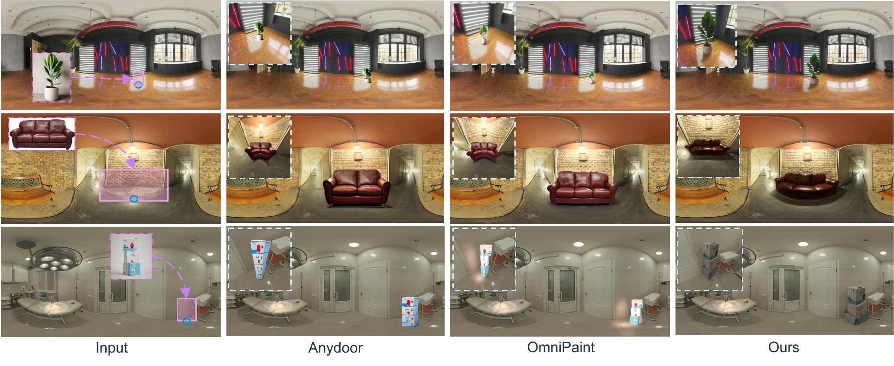
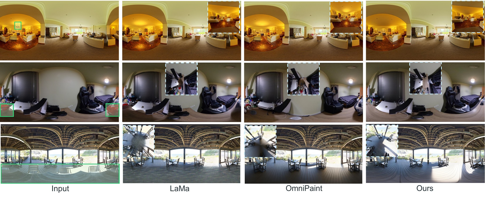
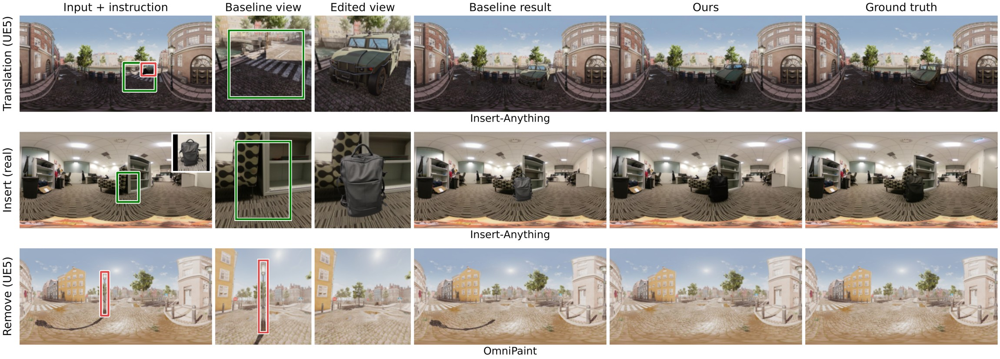

Editing Gallery
Left: input panorama · Right: Mover360 result. Drag or zoom either 360° viewer — the pair stays in sync. Below each pair, the ERP instruction map shows the edit given to the model: source object → Gaussian target point (with the reference inset for insertion). Click it to view full size.
Abstract
We present Mover360, a controllable object manipulation framework for 360° images. Unlike perspective images, the equirectangular (ERP) projection of 360° images exhibits horizontal wrap-around, latitude-dependent distortion, and global scene continuity — making object-level edits difficult for existing perspective editors to produce and for users to specify.
Mover360 centers on object Translation (relocating a specified object within an existing panorama) while supporting reference-guided Insert and Remove as auxiliary tasks. Its interface unifies point-, bbox-, and mask-guided control by encoding each task into a fixed prompt and a compact, ERP-aligned instruction map containing a source region, a target region, and a Gaussian target point. In the default point mode, a single click relocates an object, allowing the model to infer a plausible size, support, and illumination using panoramic context and an auxiliary DA² depth condition. Structurally, Mover360 is a LoRA adaptation of the pretrained Flux2-Klein-4B-Base rectified-flow transformer with an unmodified backbone.
To generate paired supervision, we construct a UE5 data-generation pipeline featuring surface-aware object placement, size-dependent motion paths, multi-camera panoramic rendering, randomized illumination, and multi-view reference capture. This yields 12,150 sequences — expanded via dynamic pair sampling into 60,750 training pairs per epoch — alongside a dual test benchmark of 210 synthetic and 50 real captured editing tuples with ground truth for all three tasks.
Across both test domains and two adaptation protocols, Mover360 outperforms strong baselines for perspective editing, insertion, and inpainting in reconstruction fidelity, semantic consistency, and distributional quality.
Motivation

The Challenge: Perspective Editors on ERP Panoramas
Object-level edits on equirectangular panoramas break perspective-image assumptions:
- The horizontal axis is periodic — left and right boundaries are adjacent longitudes, so local edits can break global spherical continuity
- Latitude-dependent distortion destabilizes object geometry and scale under direct ERP editing
- Project-edit-reproject pipelines are bounded by the view frustum: long cast shadows, reflections, and out-of-view lighting are never observed or updated, and re-projection leaves seams
Our Approach: Native, Translation-Centered ERP Editing
Mover360 edits the full panorama natively:
- Translation is the primary task; Remove and Insert — its two halves — are auxiliary tasks in the same model
- A three-channel ERP-aligned instruction map (source region, target region, Gaussian target point) unifies point / bbox / mask control — one click suffices
- Auxiliary DA² depth conditioning helps infer plausible object size, support, and layout
- LoRA adaptation of the Flux2-Klein-4B rectified-flow transformer, with circular padding for left-right continuity
Explore the three teaser examples interactively — drag any 360° viewer and the other two follow.
Approach

Overview. Mover360 is built on Flux2-Klein-4B-Base, a pretrained rectified-flow diffusion transformer, and operates in the latent space of its VAE. The input ERP panorama, the three-channel instruction map, a normalized DA² depth map, and (for insertion only) a reference image are VAE-encoded, concatenated, and patchified into condition tokens. The native Flux2 4D RoPE coordinates are re-assigned so the transformer can distinguish text tokens, noisy target-panorama tokens, and each conditioning image slot, and the transformer predicts the flow-matching velocity of the target latent. VAE encoding and decoding are wrapped with horizontal circular padding to respect ERP periodicity. A single backbone serves all three tasks — the reference branch is simply disabled for Translation and Remove.
Training. The backbone is adapted with LoRA (rank 32, ≈37M trainable parameters) using a pure flow-matching objective — no auxiliary depth, seam, or perceptual losses. Training runs at 1024×512 on 60,750 dynamically sampled pairs per epoch for 8 epochs (≈30K iterations, ≈20 hours on 8 GPUs), sampling all instruction granularities so that one set of weights serves point, bbox, and mask guidance at inference. Generating one panorama takes about 20 seconds with 50 sampling steps.
Dataset & Benchmark

One editing tuple from the UE5 test set (top) and the real captured test set (bottom): a source panorama, a target panorama, an object-absent background, and a perspective reference — supervising all three tasks. The left column overlays the three guidance granularities: fine masks (contours), bbox regions (rectangles), and the Gaussian target point (blue dot), source in red, target in green.
Paired supervision for object-level panorama editing barely exists in the wild — the same scene must be observed before and after a controlled edit. We therefore build a UE5 data-generation pipeline: objects are attached to floors, walls, ceilings, and slanted surfaces via surface raycasting, moved along 60 object-size-dependent paths, observed by three panoramic cameras per path, and rendered under randomized global and local illumination, with eight perspective reference views per object. The corpus contains 12,150 camera–object sequences over five scenes and 608 unique objects, expanded by dynamic pair sampling into 60,750 training pairs per epoch (36,450 Translation / 12,150 Remove / 12,150 Insert).
For evaluation, a dual-domain benchmark provides 210 held-out synthetic tuples and 50 real captured tuples, each with ground truth for all three tasks — enabling paired quantitative evaluation on real panoramas rather than reference-free scoring. The real set deliberately stresses long-range rearrangements: the median great-circle displacement is 50.9°, and a quarter of the moves exceed 103°.
Comparison with State-of-the-Art
Baselines applied directly to the panorama
Every editor receives the full equirectangular image, so it faces the horizontal wrap-around and latitude-dependent distortion it was never trained on.

Translation. Baselines often leave residual content at the source location, distort the moved object, or produce less plausible contact with the target surface. Mover360 uses the point or region instruction to move the object while preserving the surrounding panorama.

Insert. Reference-guided baselines may copy viewpoint-specific appearance or produce inconsistent object scale. Mover360 better adapts the inserted object to the target region and the panorama context.

Remove. LaMa is a strong specialized inpainting baseline, but Mover360 performs removal within the same unified framework used for translation and insertion.
Interactive comparison on each task — drag any viewer and the other three follow.
A strictly favourable adaptation for the baselines
To factor out ERP distortion entirely, the panorama is projected to a square pinhole view centred on the edit region, with the field of view adaptively clipped to 35°–150°. The baseline edits natively inside this locally undistorted view, and the whole edited view is re-projected back into the panorama — crediting every effect it produces beyond the target box, such as a cast shadow. Mover360 still edits the panorama natively, and is composited the same way for fairness.

Even with distortion removed, local cropping limits the baselines. Rows show Translation (UE5), Insert (real), and Remove (UE5); columns show the input panorama with the instruction regions overlaid (source in red, target in green, reference inset for Insert), the square perspective view given to the baseline with its target box, the baseline's edited view, the baseline's final panorama after re-projection, Mover360 (mask), and the ground truth. The relocated car and the inserted backpack land where requested but lack the cast shadows and reflected illumination that Mover360 and the ground truth exhibit, since a correct shadow would have to be painted outside the target box. For Remove, the baseline erases the street light and the shadow inside its view, yet the long shadow sweeping across the plaza reaches far beyond any pinhole view of the lamp and survives — Mover360 removes the object together with its entire shadow.
Click any figure to open it full size
Interactive comparison under the perspective protocol — drag any viewer and the other three follow.
Applications
360° panoramas are widely used in virtual reality, immersive telepresence, indoor scene capture, virtual staging, and environment lighting. In these applications, users need object-level manipulation rather than global image generation: moving a piece of furniture to a new location, removing an unwanted object, or inserting a reference object into an existing scene.
Mover360 supports exactly this workflow — virtual staging and indoor design (relocate furniture with a single click, remove clutter, insert catalog objects with plausible support, occlusion, and illumination), and VR content revision (edit captured 360° environments without re-shooting the scene), while preserving the surrounding panorama and its left-right continuity.
BibTeX
Placeholder — to be updated upon submission / acceptance
@article{placeholder2026mover360,
title = {Mover360: Controllable Object Manipulation in 360$^\circ$ Panoramic Images},
author = {[Author list — placeholder]},
journal = {[Venue — placeholder, not yet submitted]},
year = {2026}
}